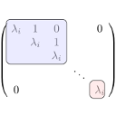

|
Solving linear equations with Gaussian elimination |
Recent Posts all posts
|  |
Jordansche Normalform: 4x4 Matrizen |

|
Berechnung der euklidischen Normalform |
Jordansche Normalform: 2x2 Matrizen |
Wie berechnet man die Jordan'sche Normalform? |

|
Wie bestimme ich den Kern einer linearen Abbildung? |
Endliche Gruppen |
Permutationen und Transpositionen |

|
When is matrix multiplication commutative? |
|
|
Wie berechnet man die Cholesky-Zerlegung? |